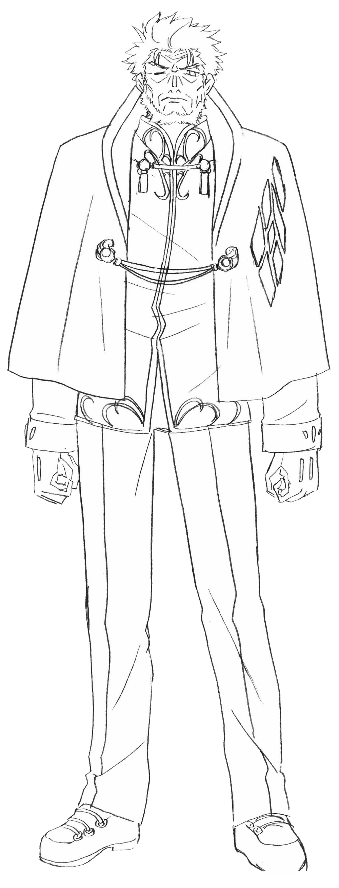
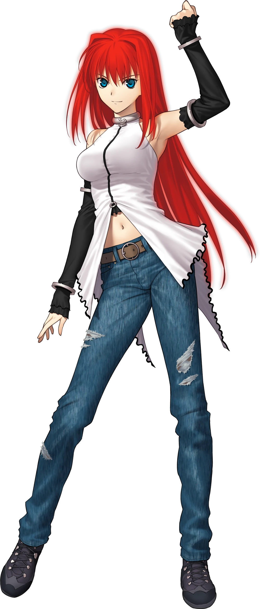
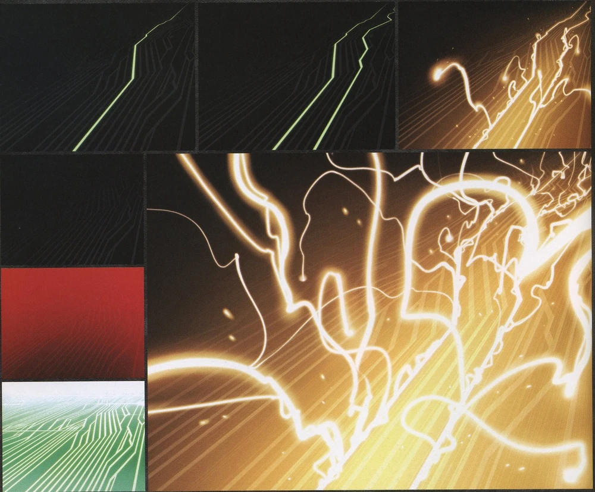
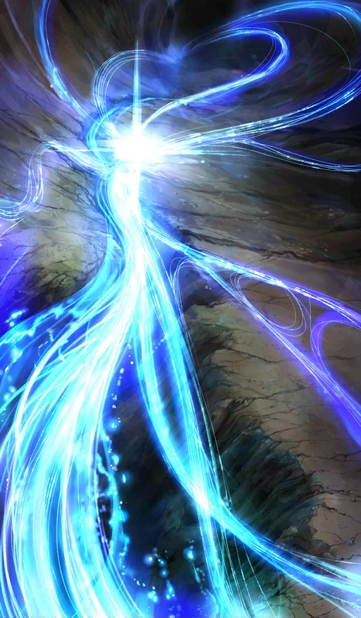
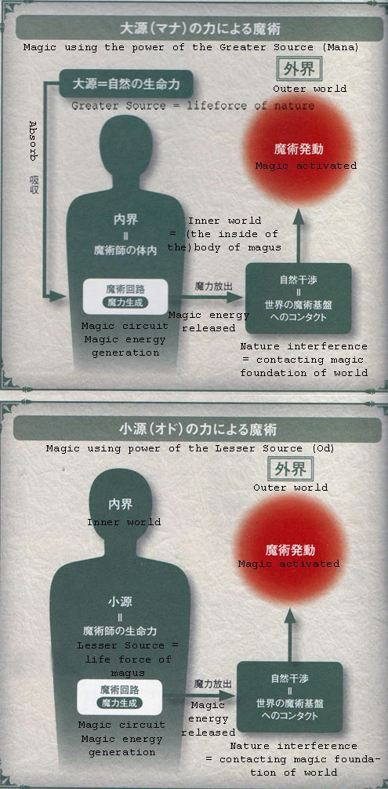

Magecraft is the artificial reenactment of Mystery, which is normally possible only to inhuman beings.
The limits of magecraft have changed with time, as science evolved and Magic from the past became possible through science.
There exists no impossibility for modern magecraft within the rules of the world and limits of human intellect; there are limitations however, since magecraft acts as the reenactment of preexisting phenomena, it is impossible to use it to create new Mysteries. There exists a "Wall" that stops human wisdom from doing so. Getting past this "wall" is known as Magic.
Magecraft draws upon a predetermined power from the Root. However, because that amount of power is fixed, the more people draw from it, the more its capacities become mundane. In short, the greater is the collective number of magi, the weaker their individual power.
Magic is the highest class of Mystery that surpasses magecraft and all current sciences of that age. It represents the actualization of events that are impossible to reproduce in a certain era, whether by humans or the Planet, even if given an infinite amount of time and resources. It is is considered the ultimate accomplishment of a magus, and only within the grasp of those who have accessed the Root.
The difference between Magic and Magecraft is that Magic is truly Impossible an actual Miracle. But the Resurrection of the dead through conventional methods is something that not even Magic has granted since Age of Gods.
Those who practice Magic are known as Magicians hey have control over their own Mysteries, but also practice magecraft. There are currently 5 Magics and two "living" magicians with a total of 4 in history.
|  |  |
|---|---|
| Kischur Zelretch Schweinorg. User of The Second Magic | Aoko Aozaki also dubber Blue. User of The Fifth Magic |
It is still debatable whether Zelretch is alive or not but most believe he is.
Ouf ok this part is long sorry.
Magic Circuits are a pseudo-nervous system that spreads itself through the human body and what qualifies a person to be a magus.
They reside within the magus’ soul and what is found on the body is just a physical expression of them that stretches itself throughout the body in a fashion similar to the nervous system. Magic Circuits do not change, and once damaged, they cannot be repaired.
Their Quality and Quantity are ranked through letters (D rank to A kinda) and their Composition that describes the overall ability, often varies between magi.
Quality has to do with how powerful of a magecraft you can handle with your circuits.
Quantity has to do with how many times you can perform this magecraft, and how large its scale is.
Composition has to do with the era of the "Mystery" they were created in.
The average Magus has about 20 magic circuits and can output up to 25 units of magical energy (The units act like spell slots in this case spells take a certain number units to cast).
the number of Magic Circuits that one possesses is determined at birth and cannot decrease or increase naturally, meaning that those from older lineages will be more powerful. It is possible to transplant Magic Circuits on another being but it is highly dangerous and there is a possibility of mutual destruction.
|  |
|---|
| Various states of Shirou's Magic Circuits. |
The Magic Circuits have two basic functions; one is to convert Life Force (Od) into magical energy and another is to access a cluster of Magic Formulae named the Thaumaturgical Foundations.
To explain this simply the Thaumaturgical Foundations refers to magical magical traditions, collections of rituals and spells that Modern Magi use. They were made in the past, and were so powerful that they were engraved on the world, and that is not bc people were better or something, they were just dumb and were like "dance and rain will fall n shit", but like Mystery was pretty strong back then, so that shit stuck. so you kinda need to follow a thaumaturgical Foundation from around the world, tho it is still possible to make formulae of your own just yk you're starting from scratch and Mystery has a terminal cancer going on rn.
Still, the Magic Circuits are ultimately something unnatural for the human body and their activity will cause pain and numbness to the magus as well as increase the bodily temperature of the user.
Magic Circuits are "opened" when magical energy is run through them for the first time. Based on their experience at that time, a magus makes their own mental trigger to activate their Magic Circuits at will from then on. For this reason, the triggers are different from each other and in an extreme case, self-injury can be regarded as a switch.
So make a mental trigger for your masters, kinda just flavor but pretty cool.
Magical Energy is a source of energy found naturally within magi and the World, acting as the source to actualize the Mysteries of magecraft. It is the source that powers all forms of magecraft. Strictly speaking, mana and od are energy in its raw state, whereas magical energy is the name given to the energy once it is converted by the Magic Circuits.
Magical energy is primarily classified by two types, Mana and Od, separated only by whether it comes from the atmosphere or from within human magi. They are essentially identical in terms of quality, but the world's mana vastly exceeds humanity's od.
Mana is the "breath of the Planet filling the world and nature," produced by the World through a network of Leylines across the globe. The density of mana on the planet is dependent on the age. Within the Age of Gods, the mana density is such that a modern human will die when exposed to it without any sort of protection.
Magi freely utilize the mana in the air for the purpose of spells that exceed their personal od, but the amount they can utilize at one time correlates to the capacity of their Magic Circuits.
The mana within a given area is finite, Similar to magi needing time to regenerate their od, the mana of an area will take a long time to replenish after it is depleted.
|  |
|---|
| What a leyline looks like. |
Od is the life force energy found within living organisms such as humans, animals and Magical Beasts. Once depleted, the Magic Circuits that are stored in the human soul will begin to replenish it.
Mana can be taken in accordingly with the capacities of the Magic Circuits, but the actual conversion process will take time.
It is common practice among the magi to start up their spells with od and then keep them running with mana. Only small-scale spells that do not interact with the environment directly are performed entirely with od, an example of which would be reinforcement.
Od is connected not only to a person's physical condition, but also to the characteristics carried by Blood.
|  |
|---|
| The creation of magical energy using the 2 sources. |
Elements are the basic substances that shape the World and play an important role in magecraft. Depending on which teachings of magecraft one got(Kabbalah, Alchemy, etc...), one could classify everything of reality into different sets of Elements.
The Five Great Elements are Fire, Water, Earth, Wind and Ether.
A magus is normally good at manipulating at least one of the Elements. To identify which of Five Great Elements his elemental affinity is, he can use Consecration, the method composed of the use of sage, tarot cards and personality tests.
Some magi possesses more than one elemental affinity and sometimes use them at the same time. Those capable of manipulating all the five Elements receive the title of Average One: Wielder of Five Great Elements and are highly valued by the Mage’s Association.
Elemental affinity only indicates what kind of magecrafts a magus is good at, not meaning he cannot at all use other Elements than his affinity.
There are special cases where A magi's Affinity is equivalent to their Origin, for them magecrafts using any of the Five Great Elements are difficult to perform, ones with their unique Affinities in turn are so easy to handle that they can occasionally realize what is impossible with normal magecrafts.
(Make sure to choose what your Affinities for your Master as they may influence some abilities that will be given to them as the campaign progresses, Im giving you complete liberty to your choices though we might discuss on whether they are possible or not)
Fire
One of the Five Great Elements that has Warm and Dry features. It is well suited for destructive magecrafts, symbolizing life and death. In the Mage's Association, they call it normal
Magi who have Fire and Water, the opposite Element, as their affinities are few.
Earth
One of the Five Great Elements that has Cold and Dry features.
It is referred to as the essence of gemstones, when combined with Ether, the essence of magecraft, any other elements can be extracted from jewels.
Water
One of the Five Great Elements that has Cold and Wet features. Both this and Wind are good at liquid manipulation.
Wind
One of the Five Great Elements that has Warm and Wet features. In the Mage's Association, they call it noble probably because there are few number of users.
Void
Also known as Ether, it is one of the Five Great Elements. Ether is also called the Fifth Imaginary Factor, according to the teachings of the Mage’s Association. It combines itself with any of the other four Elements in order to change their properties. The successor to True Ether which died out after the Age of Gods.
Ether is the artificial magical energy that forms the basis of modern magecraft, although it did not exist during the Age of Gods.
Imaginary Numbers
Also called Hollow, it is an Imaginary Element that gives its users access to The Imaginary Number Space.
Thaumaturgical Attribute also called Sorcery Trait, is one of the components that determines the effect of one's magecraft. I am not going to talk much about this one here but in Pf2e to Type Moon Conversion, but simply put these are the types of magic you can do like Reinforcement, Projection and Conversion.
Origin is the starting point that defines one's existence and directs one's actions throughout life. Coming from the Root it is the starting point that defines one's existence and directs one's actions throughout life. These actions are more along the lines of an inherent compulsion that could be called a person's instinct rather than a conscious decision. A creature's origin stays the same through all of its reincarnations.
The Origin can be awakened and if so it becomes impossible for a magus to stray from their Origin, an impulsive behavior one would follow as though it were an absolute order.
For example if your origin was "to devour", you'd have impulses about eating things in your life "I wonder how that tastes like" and the like, but if it would be awakened, you would not be able to stop yourself from devouring, you'd devour all things whether you want it or not, and you'd like it.
Origins could be things like "Sword", "Freedom", "Nostalgia" and so on, and can be revealed through certain rituals.
Origins also may influence your Calling for the pf2e Mythic rules more on that in Pf2e to Type Moon Conversion.
(Your origin is not something you get to decide but something I will choose, though you can learn what it is and if you don't vibe with it Im always willing to hear ya out)
The equivalent to western magecraft across mainland continental Asia is called:
Anyone who studied magecraft knows this, whether from the Mage's Association, the church, or a standalone guy.